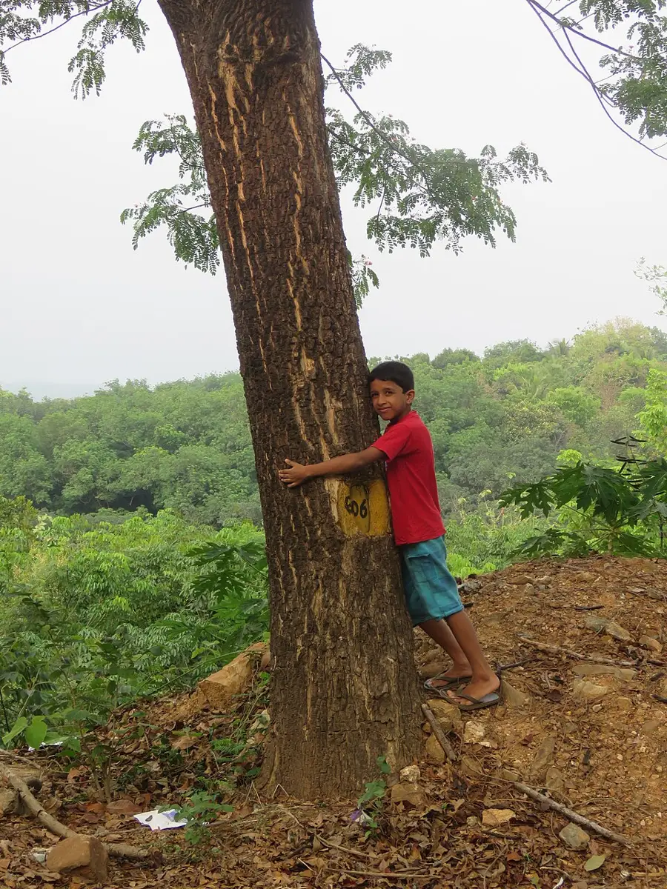

Big Tree Hug and Listen
One big tree, arms around it or palms flat on the bark, and a whole quiet minute of listening to what a tree's place sounds like.
Ages 3–310–15 min2 materials
- Ages
- 3–3
- Group
- 2–12 kids
- Time
- 10–15 min
- Where
- Outdoors
- Prep
- ✅ No prep needed

Setup
Choose and check the tree yourself before the group comes out. Properly: trunk sound and rough-barked enough to feel, no wasp or bee activity anywhere on it, no ants in a highway up the bark, nothing dead overhead, and space all the way round for the whole group to stand at the trunk together. Put your own arms round it. If the tree fails any of this, another tree gets the hug; the activity is portable and trees are not interchangeable only in the details.
Materials
- one big tree the adult has checked (sound trunk, no hives, no low dead branches, room all round it)
- no other materials, arms and ears only
Steps
- Gather the group at the trunk and say the plain framing: 'This tree is alive and it is older than everybody here. We are going to say hello the tree way, by holding on and listening.' First contact is palms flat on the bark, all round the trunk at once, feeling it before anyone wraps an arm.
- State the one rule: 'Hands on the tree, feet on the ground, and when the listening starts, our voices rest.' Show the hug properly, arms round as far as they reach, cheek nowhere near bark, a hold that can be let go of at any moment by its owner. Nobody has to hug: palms flat is holding on in full.
- The listening minute: you say 'Listening...' and the group holds on in quiet for a real minute, at three, a minute of held quiet outdoors is a long, rich time, and sounds will arrive: leaves, birds, wind in the branches overhead, the tree's own creaks. Your job in the minute is only to keep it: one gentle 'listening...' if voices start, nothing more.
- Report round, hands still on the tree: each kid names one thing they heard, in words, by pointing at their ear and then at the sound's direction, or by making the sound themselves. Every report is received as a hearing: if two kids heard the same bird, the bird gets named twice, proudly.
- Finish with the thank-you and the fact: hands pat the trunk twice, together, pat, pat, 'Thank you, tree.' Then the plain true sentence on the walk back: 'The tree will be making those sounds all day. We just stopped long enough to hear them.' A tree the group has listened at gets greeted on every future walk past it; that is a side effect, not a rule.
Variations
Easier: A small group and a half-minute: palms flat only, the adult's hands on the trunk too, and the reports taken during the quiet in whispers rather than after it.
Harder: A second tree, a second minute, and the comparison: which tree's place was louder, and what was the biggest sound at each. The group votes by walking to stand at the tree they mean.
⚠️ Safety
The adult's tree check is the safety: no hives or active nests, no ant highways, no dead branches overhead, and the group never gathers under a tree in wind strong enough to be dropping twigs. Hugging is offered, never assigned, palms flat, one hand, or standing at the trunk with hands in pockets and ears open are all full participation, and bark never goes in mouths. The group stays at the trunk: no climbing, no root-stepping races, and the quiet minute happens where the adult can see every holder-on at once.
🤝 Inclusion notes
Holding on works from any height and any hand: two palms, one palm, a forearm rested on the bark, or a lap tray's edge against the trunk with the kid's hand over it. The tree does not grade the hold. The listening is the activity's heart and it asks nothing of hands at all: a kid who only listens, and reports their sound by making it, has done the whole thing. The report-by-sound option is stated up front so it is a choice, not a fallback.
⭐ Tried this? Rate it
Your ratings live in this browser only. Nobody else can see them. There are no community ratings here; every star on this card is yours.
Rate this activity, add a note, or write a reflection
✏️ Quick reflection
Optional, saved with your rating, and exported with "📋 Copy my week".
Full activity card,